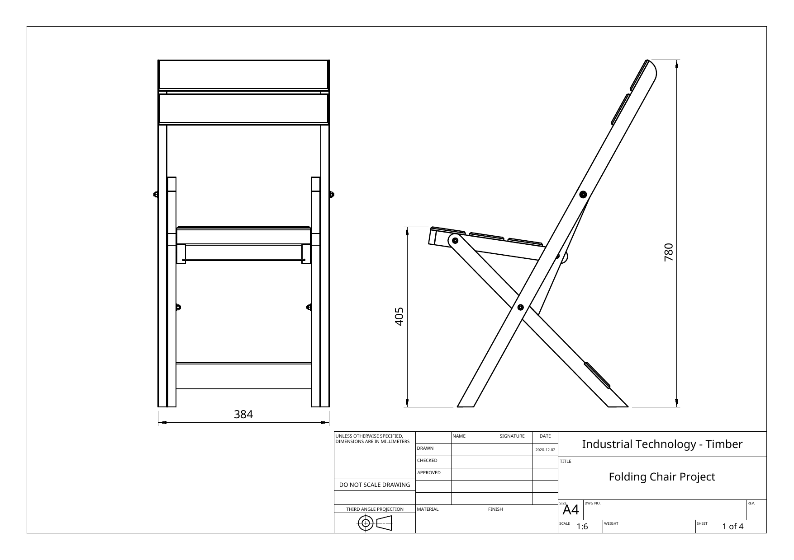
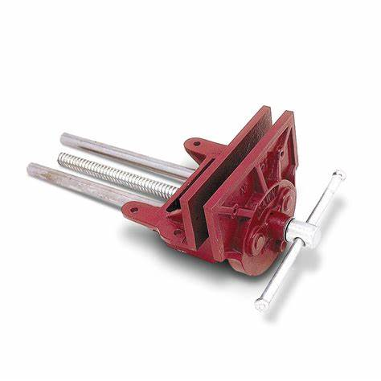
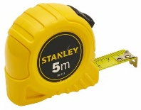

Function
The chair opens, supports a user and folds without interference.
Industrial Technology – Timber
Weeks 1–2: Project brief, plans, WHS, design and accurate mark-out

Your work
Your entries save automatically in this browser. Use Print / Save PDF before leaving the page.
Weeks 1–2
Get familiar with the folding chair project before any timber is cut.
Theory 1
A project brief is the starting point for design and manufacture. It defines the problem, the intended user, the required function and the limits within which a solution must be produced.
The folding chair is more demanding than a fixed stool because it must perform two apparently competing tasks. When open, it must support a user without collapsing, racking or rocking. When folded, the same components must rotate past one another without binding, rubbing excessively or creating unsafe pinch points. The chair must also be practical to manufacture using the available workshop equipment, materials, time and student skill.
A strong response to the brief does not simply copy the shape shown in a photograph. The maker identifies the non-negotiable requirements—overall function, safe movement, structural stability, suitable materials and accurate hardware—and separates them from features that may be varied with approval, such as edge profiles, backrest shaping or minor decorative details.
The chair opens, supports a user and folds without interference.
Edges, clearances, hardware and movement do not create unreasonable hazards.
Frame members and joints resist bending, racking and repeated use.
The design can be made accurately with the tools, time and processes available.
Theory 2

A working drawing communicates exact information needed to manufacture the product. Different views reveal different information. The front view shows the overall width, symmetry and location of cross members. The side view reveals the seat height, back angle, leg geometry and the relationship between pivot points.
The overview drawing shows an overall width of 384 mm, an overall height of 780 mm and a seat height of 405 mm. These dimensions must be read from the dimension lines and figures—not measured from the displayed image.
The instruction DO NOT SCALE DRAWING is critical. A PDF, printout or browser image may be enlarged or reduced. The written dimension remains the controlling information because it does not change when the picture is resized.
Confirm the project, units, scale and any instructions that apply to the whole sheet.
Decide whether you are looking at the front, side, a component detail or an assembly note.
Follow extension lines to determine exactly which surfaces, centres or ends the number controls.
Diameter, radius, depth, countersink and left/right instructions change how a feature is made.
Use the assembly drawing to confirm orientation and the component drawing to confirm manufacture.
Theory 3
A pivot is the centre around which one component rotates relative to another. In the folding chair, several members move through controlled arcs. This means a pivot hole is not merely a clearance hole for a bolt; its position determines the geometry of the entire mechanism.
The assembly notes specify M6 × 50 countersunk bolts, washers between moving components and under the nut, and a locknut. The bolt acts as the pivot pin. Washers separate the timber faces, spread clamping pressure and reduce friction and wear. The locknut resists loosening during repeated movement.
Adjustment matters. A pivot that is too loose can wobble and allow the chair to rack. A pivot that is too tight can crush timber fibres, trap the washers and make the mechanism bind. The goal is secure hardware with smooth, controlled rotation and no excessive play.

Sets the centre of rotation. A location error changes the movement path.
Acts as the pivot pin and passes through the moving members.
Separate faces, distribute pressure and reduce rubbing.
Maintains the adjustment while allowing repeated movement.
A hazard is something with the potential to cause harm. A risk combines the likelihood of harm with the possible consequence. A control is an action or feature used to remove or reduce the risk. For example, the rotating drill bit is a hazard; the work catching and striking a hand is a risk; clamping the work and following the drill-press SOP are controls.

A final protective layer against chips and dust; it does not replace correct setup.

A vice or suitable clamp prevents a workpiece rotating or moving unexpectedly.

A rigid steel rule is suitable for short, precise component measurements.

A tape measure is useful for larger distances but is less suitable for fine hole location.
Theory 4
Design is a process of comparing alternatives against criteria. A useful sketch does more than show appearance—it communicates how the product works, what changes are proposed and why the selected option is suitable.
Start with several quick concepts rather than defending the first idea. For a moving product, show both the open and folded positions. Add arrows to indicate movement and label the front and rear frame members, seat frame, slats, pivot holes and hardware. Annotations should explain reasons, constraints or questions still requiring testing.
A design decision is strongest when it recognises trade-offs. A thin curved member may look elegant but introduce weak short grain or extra machining. A heavier straight member may be stronger and simpler but visually less refined. The decision should compare function, strength, safety, appearance, material use, available tools, time and skill.
| Weak design evidence | Stronger design evidence |
|---|---|
| One unlabelled drawing | Several alternatives followed by a labelled selected concept |
| Only the open position | Open and folded positions with movement arrows |
| “I chose it because it looks best” | A comparison using function, strength, appearance and manufacture |
| Random changes during construction | Approved variations linked to the brief and documented before manufacture |
Theory 5

A datum is a fixed reference face, edge, point or line from which measurements are taken. In prepared timber, the selected best face is marked as the face side, and the best adjacent straight edge is marked as the face edge. Together they create a consistent coordinate system.
If one hole is measured from one end, another from the opposite end and a shoulder from an unprepared edge, small variations can accumulate into a large assembly error. Measuring related features from the same datum prevents this cumulative error.
Parallax error occurs when the eye reads a rule from an angle. The graduation appears to shift relative to the timber. Place the rule flat, align the zero accurately and position the eye directly above the graduation being read.
Mark the face side, face edge and squared datum end.
Use a steel rule for short measurements, a try square for 90° lines and a gauge for parallel lines.
A sharp pencil or marking knife reduces uncertainty compared with a thick line.
Show which side of each line will be removed so the finished component is protected.
Compare the marked component with the written drawing and its matching pair before cutting.
Theory 6
Matching components have the same dimensions and orientation. Mirrored components have the same dimensions but opposite handedness. The folding chair contains left- and right-hand frame members that must be treated as controlled pairs.
The frame drawing specifies that countersinks are prepared as left- and right-hand pairs. A correct dimension on the wrong face is still wrong. Before drilling or countersinking, arrange the parts as they will sit in the chair, label them, and confirm that the bolt heads will finish on the intended outside faces.
Guided practice
Choose an answer, check it and use the feedback to improve. After an incorrect attempt, the hint becomes more specific without simply giving the answer away.
Apply your learning
Use the sentence starters, write your own answer first, then check the guidance and compare with the appropriate response example.
Finish the two-week block
Your answers save in this browser as you work, but browser storage is not the official submission. Save the completed page as a PDF before closing it.
No marks, answers or personal information are sent from this webpage.